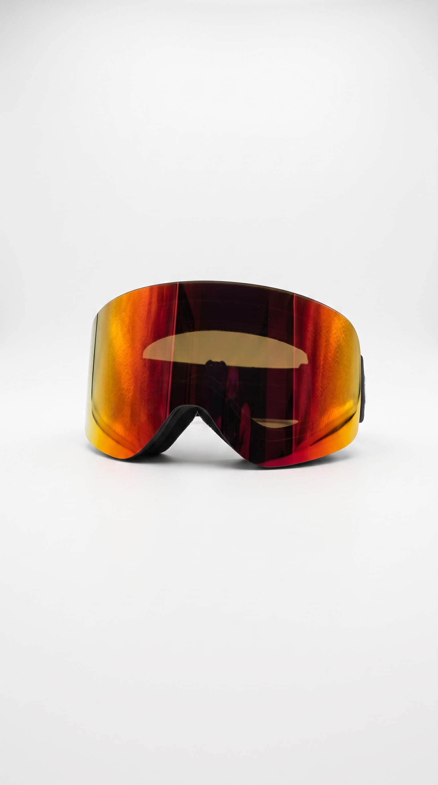
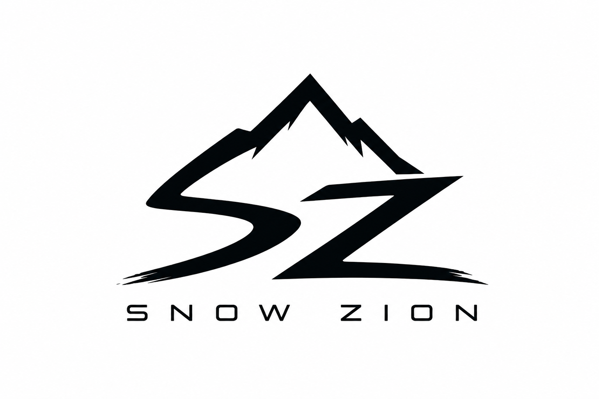
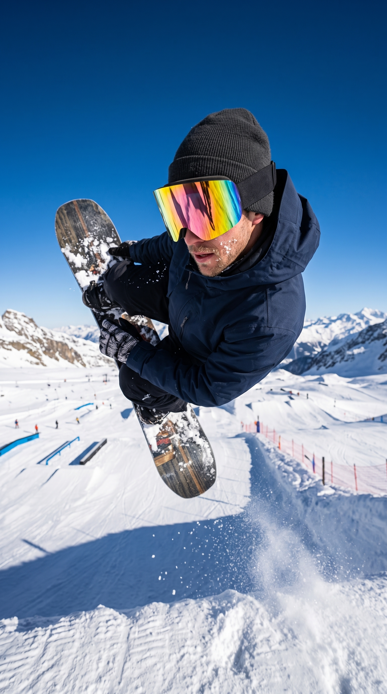
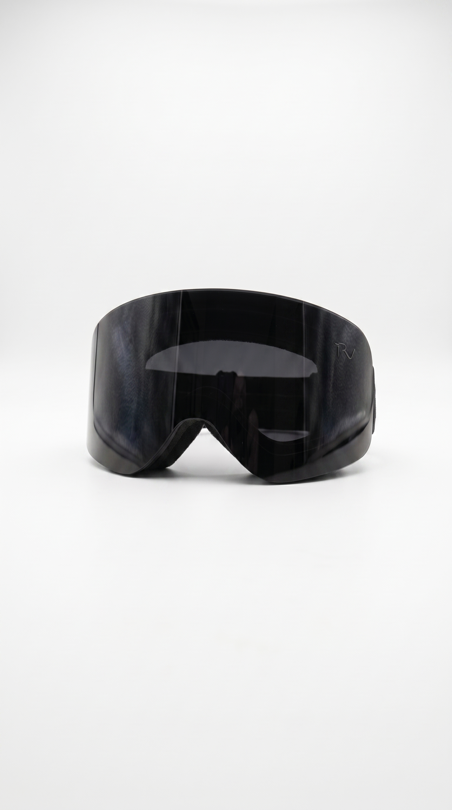
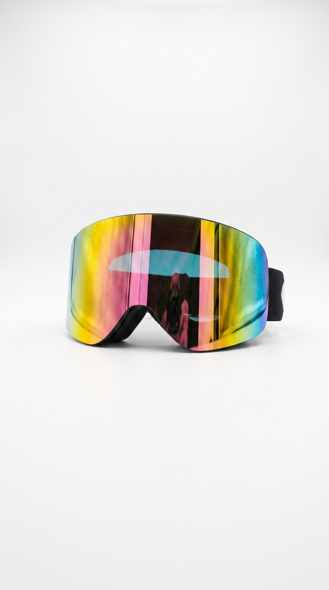
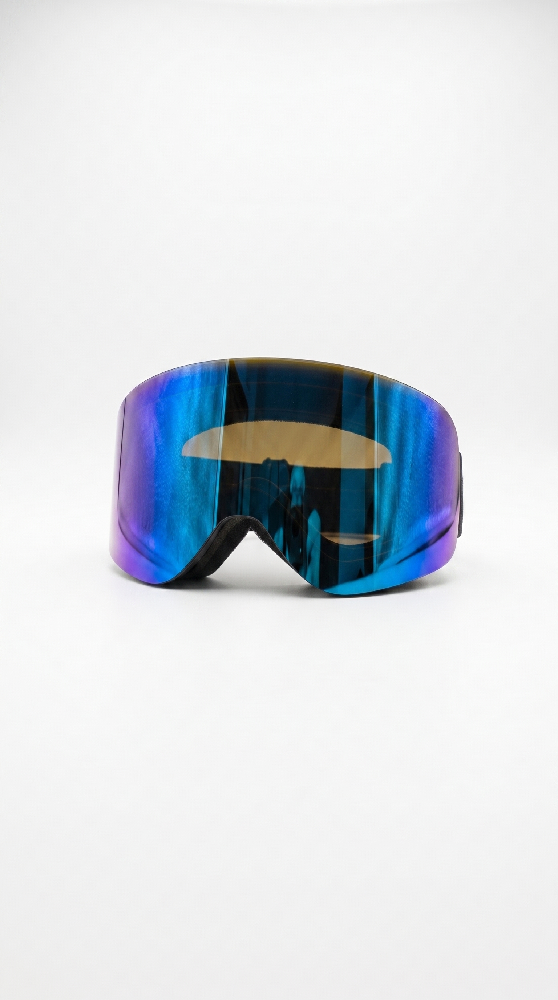
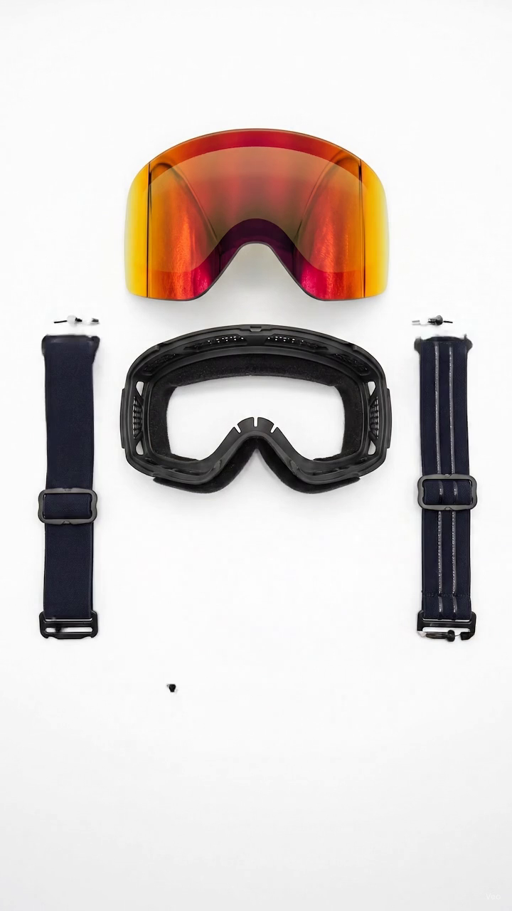
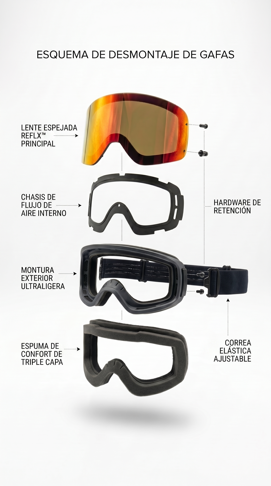
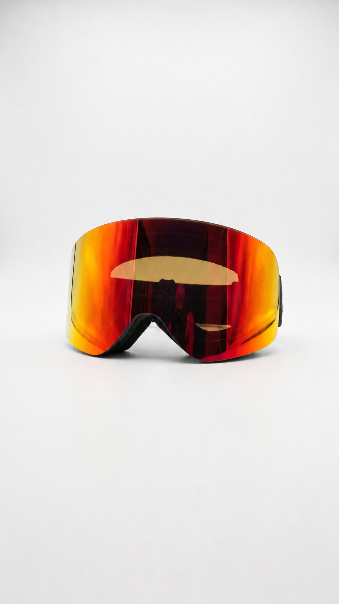
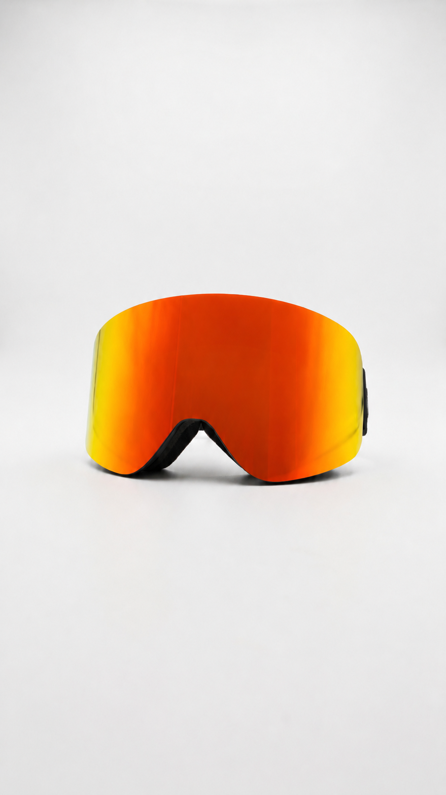

Color naranja
Antiparra naranja
Antiparra fotocromatica con mica cilindrica panoramica, espuma triple capa y compatibilidad con casco.
$39.990

0% preparando visual

Antiparras de nieve
Vision fotocromatica, ajuste sobre lentes opticos y campo amplio para bajar con claridad cuando cambia la luz.
Tienda
Un modelo pensado para ski y snowboard, con ajuste comodo, ventilacion y lente panoramica.

Color naranja
Antiparra fotocromatica con mica cilindrica panoramica, espuma triple capa y compatibilidad con casco.

Color negro
Antiparra fotocromatica con mica cilindrica panoramica, espuma triple capa y compatibilidad con casco.

Color tornasol
Antiparra fotocromatica con mica cilindrica panoramica, espuma triple capa y compatibilidad con casco.

Color azul
Antiparra fotocromatica con mica cilindrica panoramica, espuma triple capa y compatibilidad con casco.
Vista en movimiento
El recorrido muestra como se arma la antiparra: ajuste, mica y presencia final, sin perder el ritmo del scroll.

Ajuste elasticado y adherente para que la antiparra se mantenga estable sobre casco o gorro.
Formato desmontable para cambiar la mica y adaptar la antiparra a tu estilo de bajada.
Una silueta limpia, envolvente y actual, pensada para verse bien dentro y fuera de pista.
Ponte las Snow Zion, sube al andarivel y deja que la nieve haga lo suyo.

Sistema
Simulador
Mueve la intensidad UV y mira como la mica pasa de clara en nieve o nublado a mas oscura cuando el sol pega fuerte.


Respuesta fotocromatica
La mica queda en un punto medio para que puedas leer sombras, relieve y cambios de nieve con comodidad.
Tinte medio activo